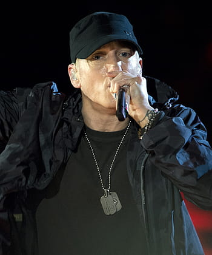
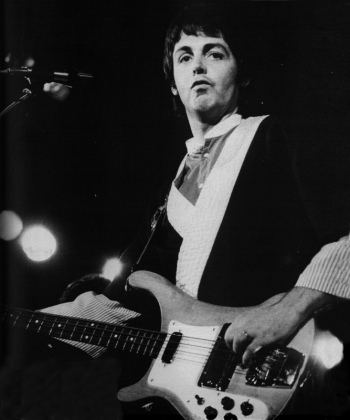
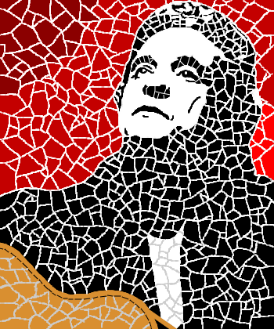
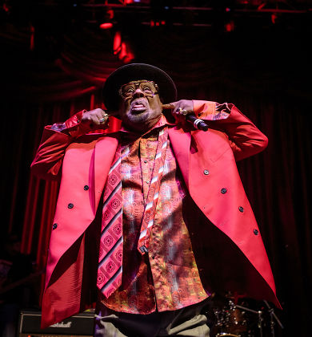
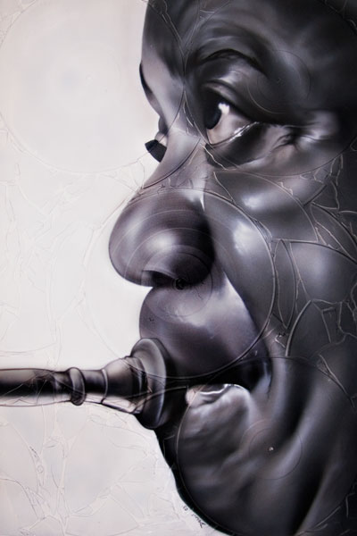
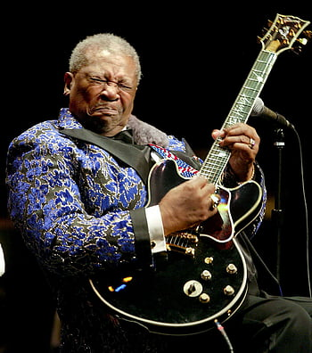

Choose your Genre
Down below are a set of musical genre's that will give you the most simplest to the most complex chord progressions. A brief statement and facts about the genre are also explained. Click on the (link) Genre to get started.
Pop
Pop music is a genre of popular music that originated in the mid-1950s. It is characterized by its catchy melodies, upbeat rhythms, and simple song structures, often incorporating elements of other genres such as rock, electronic, and hip hop. Pop music is often associated with mainstream commercial success and is widely popular across a broad audience.
- Taylor Swift
- Ariana Grande
- Ed Sheeran
- Dance-pop
- Bubblegum pop
- Baroque pop
Hip-hop
Hip-hop is a genre of music that originated in African American and Latino communities in the Bronx, New York City in the 1970s. It is characterized by a rhythmic style of speaking known as rap, which is often accompanied by beats created by a DJ or producer. Hip-hop also includes elements of turntablism, breakdancing, and graffiti art. The genre has since grown to become a global cultural phenomenon.
- Jay-Z
- Kendrick Lamar
- Eminem
- Trap Music
- Drill Music
- Boom Bap
Rock
Rock is a genre of music that emerged in the United States in the 1950s and quickly spread worldwide, becoming one of the most popular and influential genres of the 20th century. It is characterized by its use of electric guitars, bass, drums, and often, keyboards or other instruments. The sound of rock music is typically driven by a strong, steady beat, amplified sound.
- The Beatles
- Led Zeppelin
- Metallica
- Heavy metal
- Classic rock
- Progressive rock
Rhythm and Blues (R&B)
R&B, short for rhythm and blues, is a genre of music that originated in African American communities in the United States in the 1940s. It evolved from a fusion of jazz, blues, and gospel music, and is characterized by its soulful and melodic sound, often featuring prominent vocals, horn sections, and electric instrumentation.
- Stevie Wonder
- Prince
- Whitney Houston
- Contemporary R&B
- Neo-soul
- Alternative R&B
Reggae
Reggae is a genre of music that originated in Jamaica in the late 1960s. It evolved from a fusion of ska, rocksteady, and R&B music and is characterized by its distinctive rhythm, which emphasizes the offbeat and features a prominent bass line and drumming. Reggae music often features socially conscious lyrics that address themes of poverty and inequality.
- Bob Marley
- Peter Tosh
- Jimmy Cliff
- Lover's rock
- Nyahbinghi
- Dub
Country
Country music is a genre of music that originated in the Southern United States in the early 20th century. It is characterized by its storytelling lyrics that often reflect the everyday lives and experiences of rural people, as well as its distinctive instrumentation, which typically features acoustic guitars, fiddles, banjos, and drums.
- Johnny Cash
- Dolly Parton
- Willie Nelson
- Bluegrass
- Western swing
- Outlaw country
Funk
Funk is a genre of music that originated in African American communities in the mid-1960s. It is characterized by its emphasis on rhythm and groove, often featuring complex, syncopated bass lines, funky guitar riffs, and catchy horn arrangements. Funk music draws on a wide range of influences, including R&B, soul, and jazz.
- Earth, Wind & Fire
- Sly and the Family Stone
- George Clinton
- Afrofunk
- Electro-funk
- Neo-funk
Folk
Folk music is a genre of traditional music that is rooted in the cultural traditions of a particular region or community. It is often characterized by its simplicity and acoustic instrumentation, with the emphasis placed on storytelling and the lyrics. Folk music typically features guitars, banjos, fiddles, and other acoustic instruments
- Bob Dylan
- Joan Baez
- Pete Seeger
- Contemporary Folk
- Celtic Folk
- Traditional Folk
Jazz
Jazz is a genre of music that originated in the late 19th and early 20th centuries in African American communities in the Southern United States. It is characterized by its improvisational style, complex harmonies, and rhythms, and its use of syncopation, swing, and blue notes.
- Louis Armstrong
- Duke Ellington
- Charlie Parker
- Swing
- Bebop
- Fusion
Electronic Dance Music (EDM)
EDM (Electronic Dance Music) is a genre of electronic music that emerged in the 1980s and has since become a global phenomenon. It is characterized by its use of electronic instruments, including synthesizers, drum machines, and sequencers, to create a high-energy and often repetitive sound that is designed to get people dancing.
- Deadmau5
- Avicii
- Martin Garrix
- Future Bass
- Progressive House
- Drum and Bass
Blues
Blues is a genre of music that originated in the African American communities of the southern United States in the late 19th and early 20th centuries. It is characterized by its use of simple chord progressions, distinctive vocal styles, and often melancholy lyrics that express the struggles and emotions of everyday life. Today, blues music continues to be popular around the world.
- B.B. King
- Muddy Waters
- Robert Johnson
- Delta blues
- Chicago blues
- Texas blues
Comment Section:
Provide comments so that I can improve this website